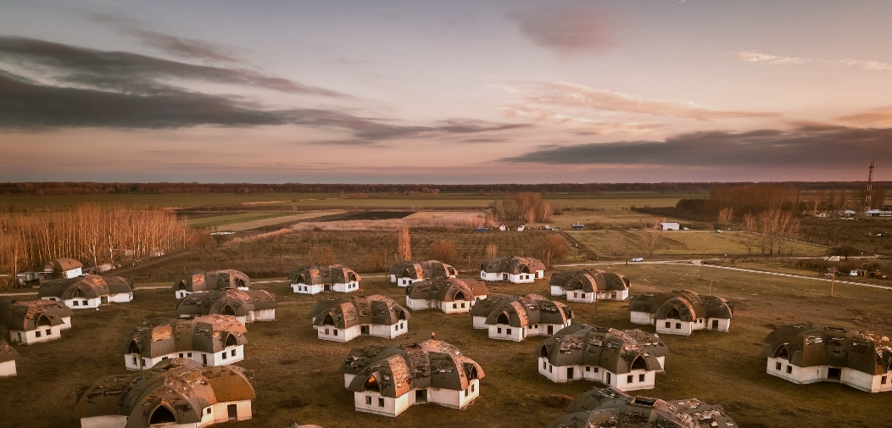
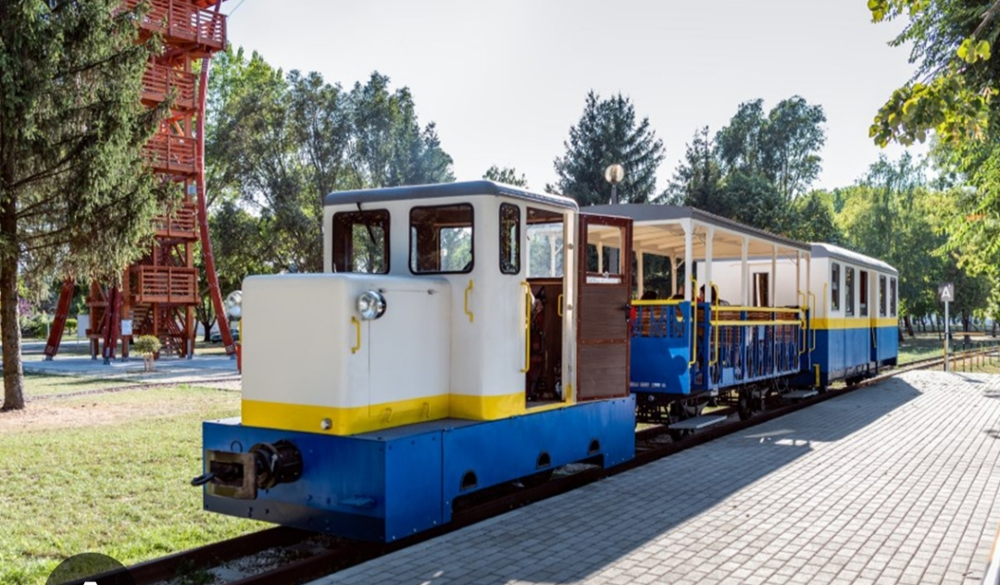
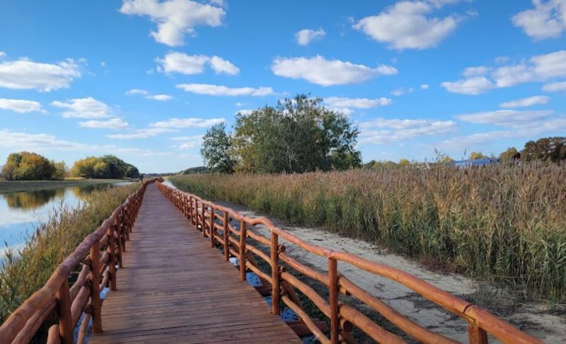
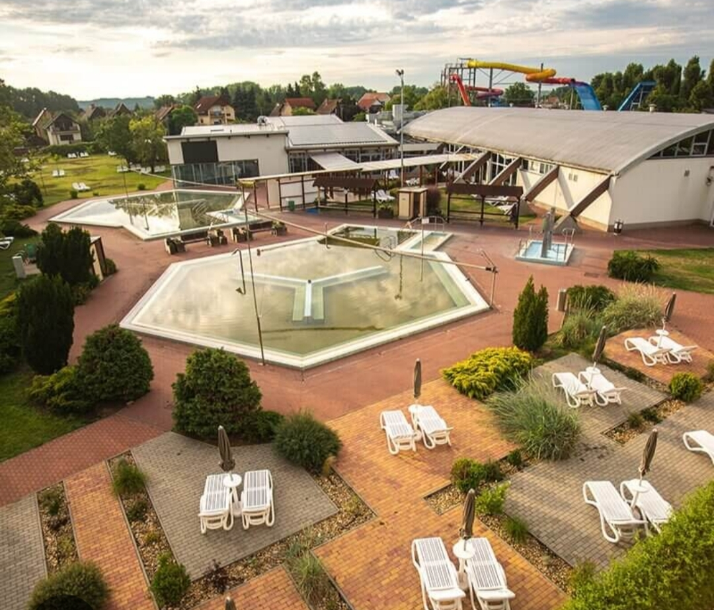
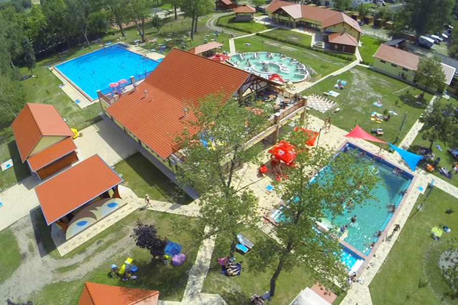

Gombaházak "Aprajafalva"

A termálfürdő melletti üdülőövezetben található gombaházak – eredetileg üdülőfalunak tervezték
az 1990-es években, eredetileg 23 házzal – mára némileg elhagyatott állapotban, de különleges
látványosságként szolgálnak.
Tisza-parti kisvasút

A keskenynyomközű kisvasút a Sportcentrumból a Tisza-partra közlekedik, nosztalgikus hangulatban
egész évben.
indulási időpontok:
Tisza-parti végállomásról: 14:00–19:00 óráig (óránként)
Találkozások Háza felé (visszaindulás): 14:20–19:20 (óránként)
A vonal hossza 1,6 km, menetideje kb. 10–11 perc egy irányban.
További információk
Nádirigó tanösvény

A tanösvény Tiszakécske Ókécske városrészében található, a kiindulóhely az Ókécskei Sportcsarnok
mellett. Itt parkolási lehetőség és egy kisebb játszótér is rendelkezésre áll.
Babakocsival is használható tanösvény kb. 1,5–2,5 km hosszban, madármegfigyelő toronnyal és
információs táblákkal – a Holt‑Tiszánál folyik a természetmegújítás.
További információk
Barack Gyógy‑ és Élményfürdő

Barack Gyógy‑ és Élményfürdő.
Élmény- és termálmedencék, szaunák, családbarát élmények várnak itt .
További információk
Kerekdombi Termálfürdő

Gyógyfürdő, szaunaprogramok.
Nyitva 06.03-08.31-ig minden nap.
További információk